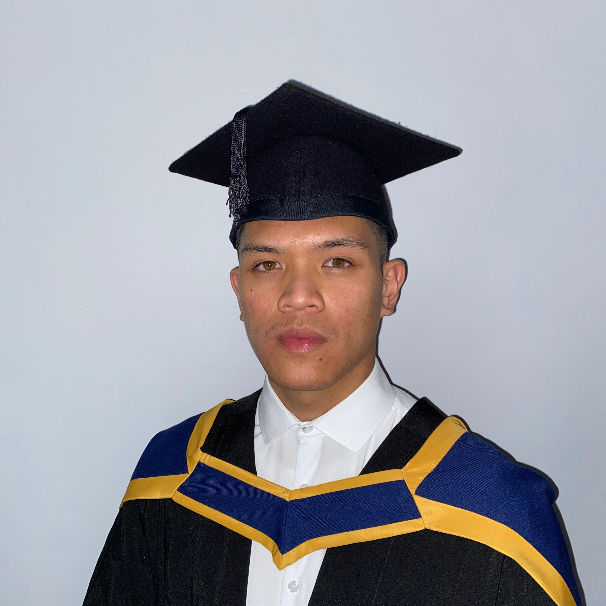

A Computing with Software Development graduate at Technological University Dublin with work experience in
both 7 months in Allied Irish Banks as a Software Engineer Intern and a month participating in an Erasmus+
program in the Netherlands. Looking for a graduate position with a view of utilizing my current abilities
and to give the chance to enhance my skills and gain more experience in a real-world environment
- Education
-
Technological University Dublin Dublin, Ireland | 09/ 2017 – 05/ 2021
Degree: Computing with Software Development (B.Sc.) Level 8
- Skills
-
- Knowledge of Python, Java and SQL
- Designing and creating database schemas
- Developing and designing websites using a various frameworks and languages
- Source Code Management (Version Control System) tools like Git
- Major cloud service providers, like AWS, Azure
- Experience in developing CI/ CD pipelines
- Knowledge of software containerization platforms like Docker
- Experience
-
Allied Irish Banks Dublin, Ireland | 02/ 2020 – 07/ 2020
Software Engineer Intern
- Worked as a software engineer intern as part of the Microservice side of the Document Capabilities
team
- Shadowed professional engineers and got first-hand experience in the development process
- Assigned to develop a proof of concept using Java. Consisting of different ways of manipulating pdf
files. I was assigned with the tasks to create a program that can create, merge and split a pdf file
alongside various different functionalities added throughout every iteration. Using Spring Tool Suite
(eclipse) as the main Java framework and Git (version control)
GamesGroothandel Netherlands | 01/ 2017 – 02/ 2017
Erasmus+ Work Experience
- Manage stock control
- Preparing and packaging orders
- Assigned to develop a small website as a project. Using front-end technologies such as HTML, CSS, and
JavaScript
- Shadowed workers and got first-hand experience in everyday office work
- Projects
-
Technological University Dublin Dublin, Ireland | 09/ 2021 – 05/ 2021
TUStudent Assistant
- A two-semester-long 4th-year project involving full-stack development of a web application. For my
final year project, I wanted to make student life easier to manage. This gave me an idea to develop a
student assistant application. The idea was to have your CA, lab due dates from Moodle, and your class
timetable from CMIS available to view in one place. With creating an API handling to call to a
firebase database. Using tools and technologies such as Javascript, Python (web scrape) to obtain my
data, Firebase (database) to store data, HTML, CSS, Visual Studio, React (user interface), Alan AI
(voice AI), Postman (testing) and Git (version control)